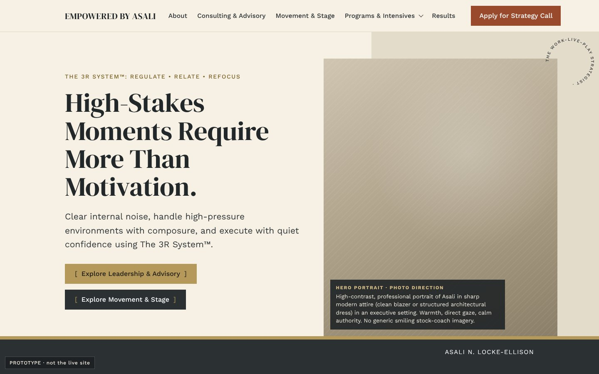
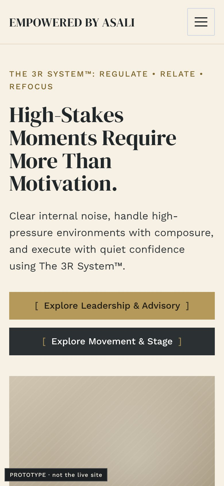
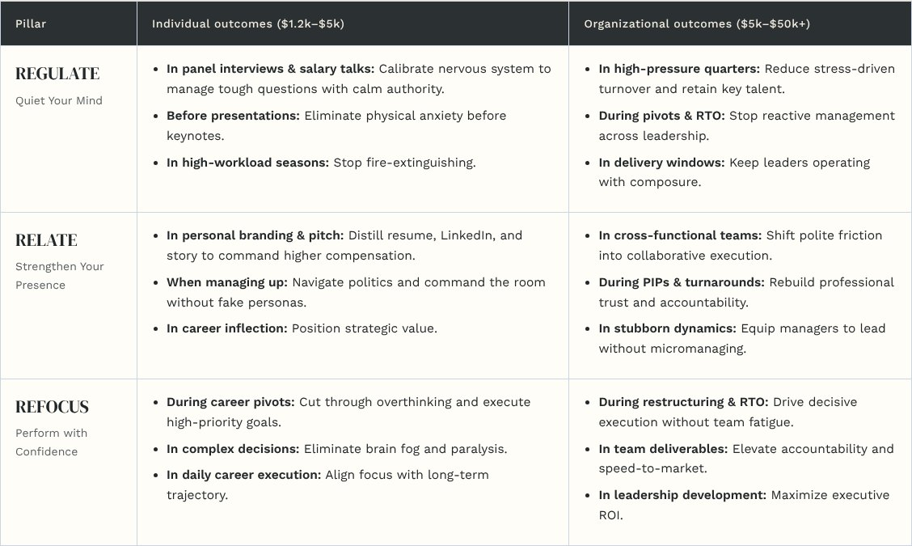
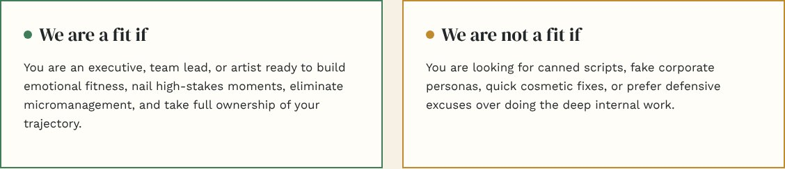

Empowered by Asali · Squarespace rebuild + intake funnel
Seven prototype pages from the PDF's own copy, a sorter for your Excel lists, the 17hats routing modelled and tested, and a redirect map for every old URL. Everything below was run, not described.


Home, built from the blueprint at 1440 px and 390 px. The navigation is the blueprint's five links plus the Apply button; the photo frame states the blueprint's photo direction until your shoot arrives.
Three things I found on the live site and in the tools
01 · 17HATS
17hats starts different workflows from a form only through a "Choose from a List" question, and a form uses either one form-level workflow or per-answer workflows, not both.
Built: the investment question is a pick-list with four answers, each starting one workflow. A typed version is in the tests and starts 0.
02 · YOUR /CONTACT PAGE
/contact offers "Schedule a FREE 15-min discovery call" with no questions asked, so unqualified leads can skip the questionnaire entirely.
Built: /contact redirects to /intake, and the old booking link is retired as part of Phase 2.
03 · CALENDLY
Secret events stay off your booking page, but a forwarded link still books. Calendly's routing forms need the Teams plan.
Built: 17hats does the screening, so no Teams plan is needed. The link only goes out after a qualifying answer, and is swapped if it ever leaks.
Navigation consolidated, nothing broken
Kept on purpose: /fiercely-feminine-mind-body-reset-intensive (the blueprint links to it), /rsvp, the case-study posts and /cart.
Phase 1 · Your Excel lists
Phase 2 · 17hats + Calendly + Gmail
Blueprint details, built and checked


"Are We a Fit?" panels in the blueprint's green and amber borders. Left: the 3R Strategic Application Matrix as a plain HTML table, which works in a Squarespace Code Block on every plan and stacks into cards on phones.
The lab's build sheet maps each blueprint rule to the Squarespace setting it needs, with the Custom CSS for the #cbd5e1 hairlines.
Page checks · 7 pages × 3 widths in Chromium